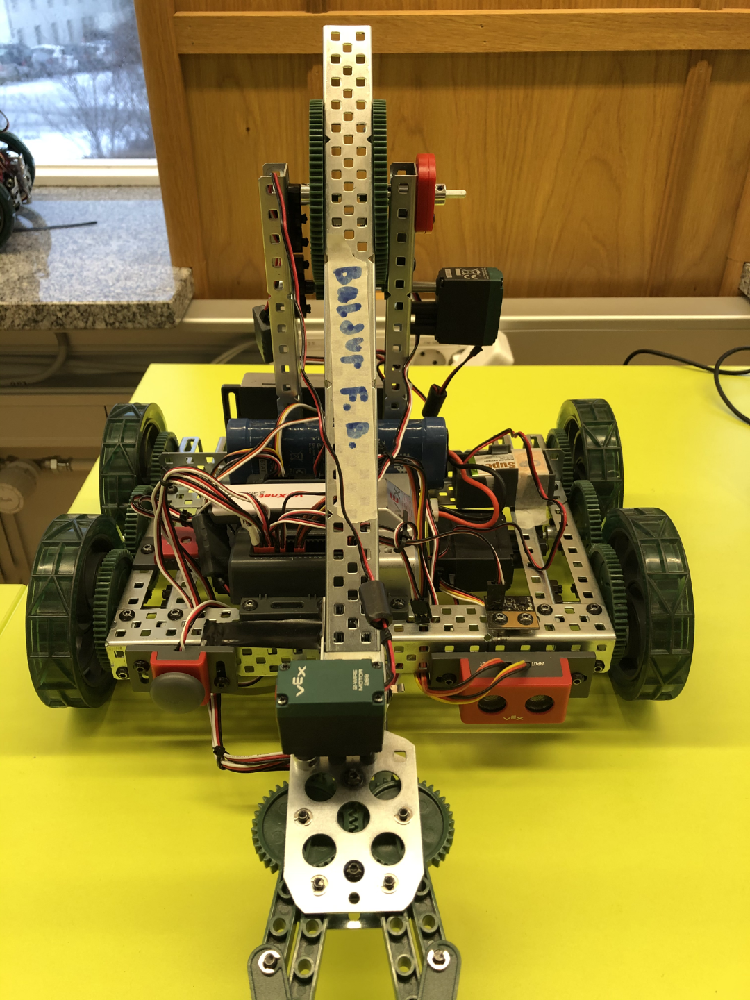
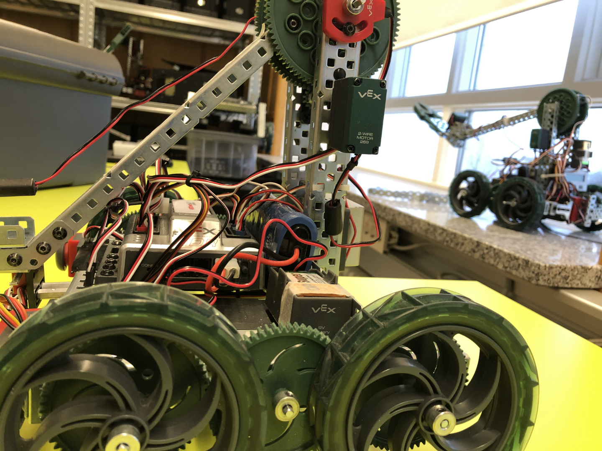
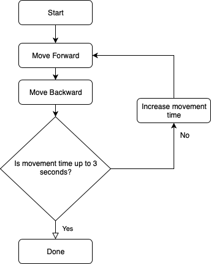
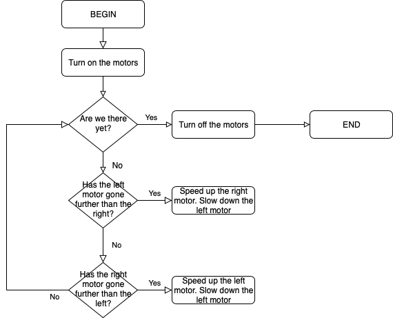
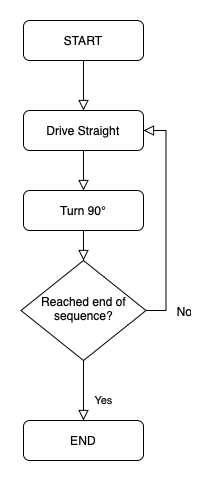
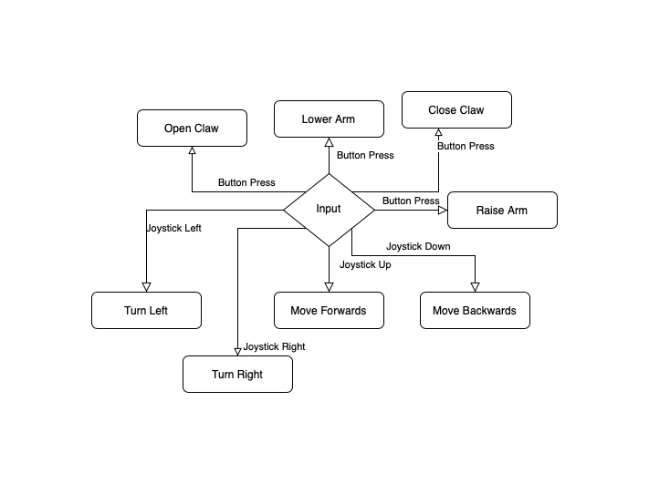
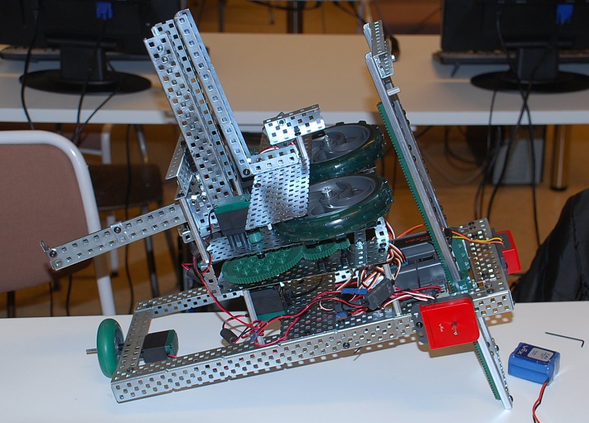

Ég er að ljúka námi í Tækniskólanum með stæl í róbótum. Róbótinn minn sem ég kalla Friðrik Gunnar Davíð er svaka græja. Hann kemst á allt að 3 km/h hraða og missir bara stundum samband við fjarstýringuna. Verkefni áfangans er að láta Friðrik Gunnar Davíð leysa allskonar þrautir; eins og til dæmis að keyra beint og beygja. Síðasta verkefnið sem ég leysti var að láta hann hlýða skipunum frá fjarstýringunni í einu og öllu. Þá kom í ljós að armurinn á honum var laus og hélst ekki uppi. Það tók bara klukkutíma að skipta um íhlutinn sem olli þessu vegna þess að hann var kannski nokkrum millimetrum of stuttur. Ég setti stöng sem er kannski 5cm lengri og er því fáranglega löng og stendur langt út úr arminum. En það var eina stöngin sem ég fann sem var lengri en sú sem var í Friðriki. Svona eru nefnilega Hardware vandamál. Það er aldrei einfalt að leysa þau. Annað hardware vandamál sem ég vil ekki leysa er að vírinn sem liggur í mótórana er að detta í sundur í klónni. Ef klóin brotnar endanlega þá verður nefnilega að skipta um mótóra og það er MEGA vesen.

Friðrik Gunnar Davíð
Friðrik Gunnar Davíð með vini sínumÉg fékk ekki að setja Friðrik saman. Ég fékk hann samsettan og þurfti svo bara að herða aðeins og laga snúrurnar.
Fyrsta forritunarverkefnið var að láta vélmennið keyra ákveðna vegalengd fram og til baka miðað við tíma og afl. Það þýðir að róbótinn mun beygja líka vegna þess að mótorarnir eru ekki endilega 100% samtaka.
Næsta verkefni er að kenna vélmenni að keyra beint; með því að keyra miðað við snúninga í staðin fyrir tíma, síðan að beygja í hvaða gráðu sem er, til þess að geta leyst þrautina í 3. hluta.
Vélmenni eru oft fjarstýrð (þá kölluð drónar) í það minnsta verður að vera hægt að stöðva vélmennið ef það gerir eitthvað óvænt, þetta verkefni gengur út á það. Bæði að geta stýrt vélmenninu með fjarstýringu og að geta stöðvað vélmennið með neyðarhnapp. Fjarstýring er einnig nauðsynleg vegna þess að hún tengir vélmennið við tölvu þannig að hægt er að aflúsa(debugga) og hala upp hugbúnað þráðlaust.
Vélmenni sem er þunglynt og vill forðast áreksta :-) nemendur forrita vélmenni þannig að það keyrir þegar ljós eru kveikt en stoppar ef slökkt. Þegar vélmennið keyrir á það beygja ýmist til hægri eða vinstri ef hindrun er framundan ekki ósvipað og sjálvirk ryksuga :-)
Eitt mesta notagildi vélmenna í dag er í að sækja vöru og koma á ákveðin stað, oft er þetta gert með línum sem vélmenni fylgja þar til komið er á stað sem varan er. Þetta verkefni gengur út á það að forrita vélmenni þannig að það fylgi línu og ekkert annað bara ekki fara útaf línu. Nemendur fá í hendur 3.línu skynjara: hægri, miðja og vinstri. Þetta er erfitt verkefni því nemendur þurfa að stilla vélmennið þannig að það skynji línu frá öðru á golfi
Erfiðasta verkefnið er síðasta verkefnið, vélmennið fylgir línu á ákveðin stað sækir hlut og skilar honum á ákveðin stað hér er margt sem getur farið úrskeiðis og reynir á þolinmæði :-)

Flæðirit fyrir fyrsta hluta af verkefni 2
Flæðirit fyrir annan hluta af verkefni 2
Flæðirit fyrir þriðja hluta af verkefni 2
Flæðirit fyrir fjarstýringuHver hópur eða einstaklingur hannar sitt eigið lokaverkefni þ.e þraut sem vélmennið leysir, þrautin má vera staðbundin þ.e vélmennið hreyfist ekki úr stað eða er innan borðsins sem er sér hannað fyrir vélmennin okkar. Þið megið breyta vélmenninu frá því sem nú er en þó þannig að ekki verði fleiri en 4 – 5 mótorar en sömu skynjarar. Einnig má gera verkefni með Arduino og Rasberry pi3
